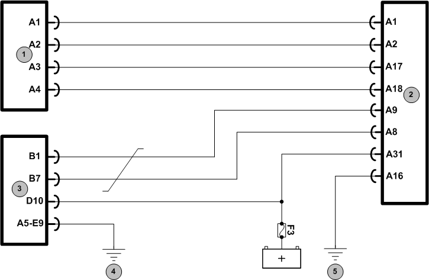

|
 
Legenda
- Sensor de velocidade (sensor hall)
- Cluster
- Unidade lógica (LU)
- Ponto de massa localizado na coluna A do lado direito
- Ponto de massa localizado na coluna A do lado esquerdo
Descrição da Falha
Circuito de alimentação do
sensor de velocidade (sensor Hall), curto para o massa ou para o positivo.
Indicação de Falha
Luz de alerta acende constantemente com o símbolo  e ativa o alarme sonoro longo, com o veículo andando ou parado.
e ativa o alarme sonoro longo, com o veículo andando ou parado.
A luz permanece acesa enquanto o erro existir.
Estratégia de Monitoramento
A Unidade Lógica (LU) monitora
através da mensagem de CAN fornecida pelo Cluster se há curto circuito
na alimentação do sensor de velocidade (sensor Hall).
Efeito da Falha
Não haverá indicação de velocidade no painel.
Possíveis Falhas
FMI 6: Curto para o massa ou para o positivo.
- Verificar o chicote e as conexões
do sistema.
- Sensor de velocidade (sensor hall) com defeito.
Avisos
  Atenção! Atenção!
Leia sempre as Recomendações para Diagnósticos.
Registro de Falhas em Outros Módulo de Comando
----
Passos do Diagnóstico de Falhas
Considerar os esquemas elétricos do veículo
Verificação
| Medição
| Eliminação da Falha
|
Sensor hall
|
Com a linha 15 desligada:
- Medir a isolação entre o pino A1 e A2
Valor nominal:
resistência muito alta, circuito aberto
- Medir a isolação entre o A1 e o massa
Valor nominal:
resistência muito alta, circuito aberto
- Medir a isolação entre o A2 e o demais pinos do conector
Valor nominal:
resistência muito alta, circuito aberto
|
– Verificar os cabos quanto a mau contato, corrosão ou cabos invertidos
– Verificar as conexões quanto a oxidação ou mau contato
– Em cerca de 0 Ω, curto-circuito, repare
o chicote elétrico
– Caso nenhuma falha seja verificada, substituir a Unidade Lógica (LU) ou o Cluster
|
|